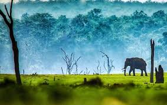
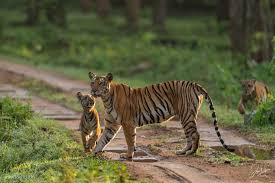
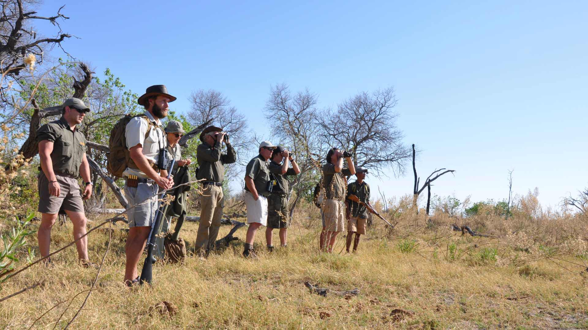

Aditya Wildlife Photography
About Us
About Us
We have visited Kabini for some spectacular photos of nature and animals.
;
A special flower which is only found in Kabini, It is the Glory Lily.

The Photos of the Black Panther taken by us became popular in social media.

And this is the photo of our team when we went to Botswana.
